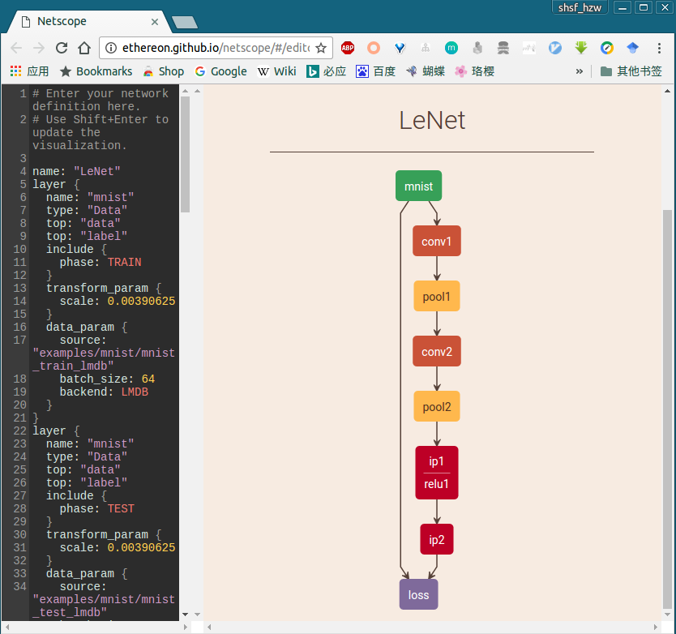

TensorBoard:TensorFlow集成可视化工具
GitHub官方项目：https://github.com/tensorflow/tensorflow/tree/master/tensorflow/tensorboard
TensorBoard 涉及到的运算，通常是在训练庞大的深度神经网络中出现的复杂而又难以理解的运算。
为了更方便 TensorFlow 程序的理解、调试与优化，Google发布了一套叫做 TensorBoard 的可视化工具。你可以用 TensorBoard 来展现你的 TensorFlow 图像，绘制图像生成的定量指标图以及附加数据。
当 TensorBoard 设置完成后，它应该是这样子的：

输入下面的指令来启动tensorboard：
|
|
这里的参数 logdir 指向 SummaryWriter 序列化数据的存储路径。如果logdir目录的子目录中包含另一次运行时的数据，那么 TensorBoard 会展示所有运行的数据。一旦 TensorBoard 开始运行，你可以通过在浏览器中输入 localhost:6006 来查看 TensorBoard。进入 TensorBoard 的界面时，你会在右上角看到导航选项卡，每一个选项卡将展现一组可视化的序列化数据集 。对于你查看的每一个选项卡，如果 TensorBoard 中没有数据与这个选项卡相关的话，则会显示一条提示信息指示你如何序列化相关数据。
TensorFlow 图表计算强大而又复杂，图表可视化在理解和调试时显得非常有帮助。 下面是一个运作时的可式化例子：

更多详细内容参考：
- [TensorFlow中文社区] TensorBoard:可视化学习
- [TensorFlow中文社区] TensorBoard:图表可视化
- [极客学院] TensorBoard:可视化学习
Netscope:支持Caffe的神经网络结构在线可视化工具
官网：http://ethereon.github.io/netscope/quickstart.html
GitHub项目：https://github.com/ethereon/netscope
“A web-based tool for visualizing neural network architectures (or technically, any directed acyclic graph). It currently supports Caffe’s prototxt format.”
Netscope是一个支持prototxt格式描述的神经网络结构的在线可视工具。它可以用来可视化Caffe结构里prototxt格式的网络结构，使用起来也非常简单，打开这个地址 http://ethereon.github.io/netscope/#/editor，把你的描述神经网络结构的prototxt文件复制到该编辑框里，按shift+enter，就可以直接以图形方式显示网络的结构了。
比如，以 mnist的Lenet 和 imagenet的AlexNet 网络结构为例，分别把Caffe中 caffe/examples/mnist/lenet_train_test.prototxt 和 caffe/models/bvlc_alexnet/train_val.prototxt 文件的内容复制到左侧编译框，按shift+enter,立即就可以得到可视化的结构图，具体每层的参数等，如下：


Netscope给出的几个常见CNN网络结构示例：
- AlexNet | Alex Krizhevsky, Ilya Sutskever, Geoffrey Hinton
- CaffeNet | Yangqing Jia, Evan Shelhamer, et. al.
- Fully Convolutional Network — Three Stream | Jonathan Long, Evan Shelhamer, Trevor Darrell
- GoogleNet | Christian Szegedy, et. al.
- Network in Network | Min Lin, Qiang Chen, Shuicheng Yan
- VGG 16 Layers | Karen Simonyan, Andrew Zisserman
以上网络的prototxt源文件见：https://github.com/ethereon/netscope/tree/gh-pages/presets 。
使用 python/draw_net.py绘制网络模型
python/draw_net.py，这个文件，就是用来绘制网络模型的，也就是将网络模型由prototxt变成一张图片。
在绘制之前，需要先安装两个库
1.安装ＧraphViz
|
|
注意，这里用的是apt-get来安装，而不是pip。
2.安装pydot
|
|
用的是pip来安装，而不是apt-get。
安装好了，就可以调用脚本来绘制图片了。
draw_net.py执行的时候带三个参数
- 第一个参数：网络模型的prototxt文件；
- 第二个参数：保存的图片路径及名字；
- 第二个参数：- - rankdir = x，x 有四种选项，分别是LR, RL, TB, BT 。用来表示网络的方向，分别是从左到右，从右到左，从上到小，从下到上。默认为LR。
例：绘制Lenet模型
|
|

参考阅读：
Neural Network Playground
官网：http://playground.tensorflow.org
GitHub项目：https://github.com/tensorflow/playground
Deep playground is an interactive visualization of neural networks, written in typescript using d3.js.
PlayGround是一个图形化用于教学目的的简单神经网络在线演示、实验的平台，非常强大地可视化了神经网络的训练过程。

参考阅读：
ConvnetJS
官网：http://cs.stanford.edu/people/karpathy/convnetjs/
GitHub项目：https://github.com/karpathy/convnetjs
ConvNetJS is a Javascript library for training Deep Learning models (Neural Networks) entirely in your browser. Open a tab and you’re training. No software requirements, no compilers, no installations, no GPUs, no sweat.

Some Online Demos
- Convolutional Neural Network on MNIST digits
- Convolutional Neural Network on CIFAR-10
- Toy 2D data
- Toy 1D regression
- Training an Autoencoder on MNIST digits
- Deep Q Learning Reinforcement Learning demo
- Image Regression (“Painting”)
- Comparison of SGD/Adagrad/Adadelta on MNIST
wevi
官网：wevi: word embedding visual inspector
GitHub项目：https://github.com/ronxin/wevi

具体参考：wevi: Word Embedding Visual Inspector
CNNVis
文章来源：Towards Better Analysis of Deep Convolutional Neural Networks arxiv.org/abs/1604.07043
具体参见：能帮你更好理解分析深度卷积神经网络，今天要解读的是一款新型可视化工具——CNNVis，看完就能用！
摘要： 深度卷积神经网络（CNNs）在许多模式识别任务中取得了很大的性能突破， 然而高质量深度模型的发展依赖于大量的尝试，这是由于没有很好的理解深度模型是怎么工作的，在本文中，提出了一个可视化分析系统CNNVis，帮助机器学习专家更好的理解、分析、设计深度卷积神经网络。

（ 未经授权禁止转载，转载请联系作者并注明出处，谢谢！）